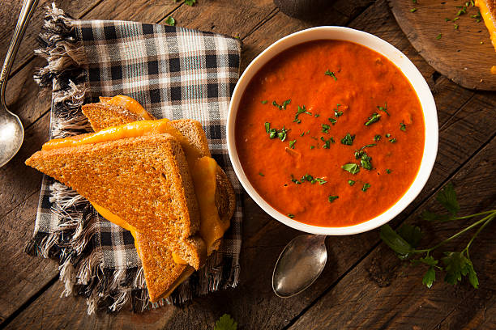

Your New Favorite Tomato Soup Recipe
Created by George Biniaris

Ingredients:
- 4 large tomatoes
- 1 onion
- 2 cloves of garlic
- 1 tablespoon of olive oil
- 1 teaspoon of sugar
- 1 teaspoon of salt
- 1 teaspoon of black pepper
Instructions:
- Peel and chop the onions and garlic.
- Peel the tomatoes and remove the seeds.
- Heat the olive oil in a large saucepan over medium heat.
- Add the onions and garlic to the saucepan and cook until they are soft and translucent.
- Add the chopped tomatoes to the saucepan and let cook for 10 minutes.
- Add the sugar, salt, and black pepper to the saucepan and stir well.
- Using an immersion blender, puree the soup until it is smooth.
- Serve hot and enjoy!
Nutrition Facts:
Here is the nutrient profile of one large (182-gram) raw tomato
(DV: Daily Value)*
| Calories |
33 |
| Carbs |
7 grams |
| Fiber |
2 grams |
| Protein |
1.6 grams |
| Fat |
0.4 grams |
| Vitamin C |
28% of the DV |
| Vitamin K |
12% of the DV |
| Vitamin A |
8% of the DV |
| Potassium |
9% of the DV |
This is my favorite recipe because it's simple, healthy, and delicious. I love the combination of sweet and savory flavors in every bite. Plus, it's so easy to make and I always have the ingredients on hand.
If you're looking for more great recipes, check out Allrecipes, a website that offers free recipes online.